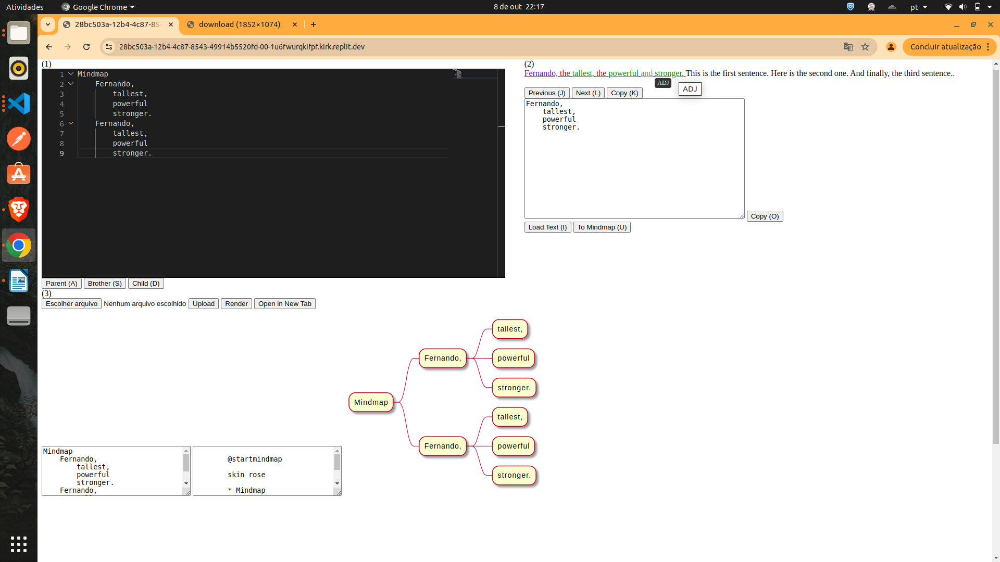
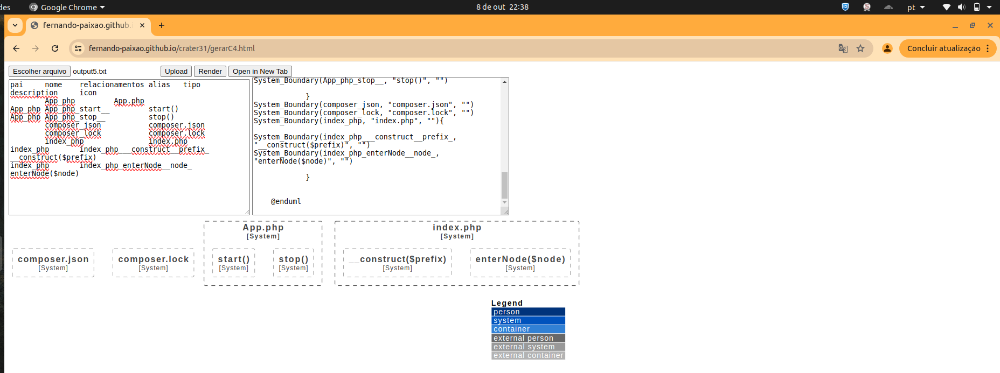

<!DOCTYPE html>
<html lang="en">
<head>
    <meta charset="UTF-8">
    <meta name="viewport" content="width=device-width, initial-scale=1.0">
    <title>Content Renderer</title>
    <style>
        body {
            display: flex;
            font-family: Arial, sans-serif;
        }
        #menu {
            width: 20%;
            border-right: 1px solid #ccc;
            padding: 10px;
        }
        #content {
            width: 60%;
            padding: 10px;
        }
        #keywords {
            width: 20%;
            border-left: 1px solid #ccc;
            padding: 10px;
        }
        .menu-item {
            margin: 5px 0;
        }
        .clickable {
            cursor: pointer;
        }
    </style>
</head>
<body>
    <div id="menu"></div>
    <div id="content"></div>
    <div id="keywords"></div>
    <script src="https://cdn.jsdelivr.net/npm/marked/marked.min.js"></script>
    <script>
document.addEventListener('DOMContentLoaded', () => {
    const contents = [
        //
        //![MarineGEO circle logo](https://marinegeo.github.io/assets/img/MarineGEO_logo.png
        //professionals
        {
            menuPaths: ['me.contact'],
            markdownContent: '# Me\nE-mail: fvp.eng.software@gmail.com\n\nLinkedIn:https://www.linkedin.com/in/fernando-vieira-paix%C3%A3o-326817142/',
            keywords: ['me']
        },
        {
            //parei aqui no content, pensei em criar depois de duas linhas experiências passadas de estudo e profissionais
            menuPaths: ['me.experience'],
            markdownContent: '# Me\nI\'m a professional developer since 01/09/2008\n\nToday as fullStack developer on Soluti on a remote job\n\nFreelancer and instructor sometimes\n\nMore in my curriculum: https://www.linkedin.com/in/fernando-vieira-paix%C3%A3o-326817142/overlay/1583505076069/single-media-viewer/?profileId=ACoAACKmAg4B57vaQeR_5NIkTEGnmyTB4mx15TQ',
            keywords: ['me']
        },
        {
            menuPaths: ['me.interest'],
            markdownContent: '# Me\n\nSoftware Architecture\n\nSoftware Engineering\n\nProgramming',
            keywords: ['me']
        },
        {
            menuPaths: ['me.products'],
            markdownContent: '# Products\n\nTech Speechs\n\nTech Consultant\n\nQuick MVPs\n\nFreelancer Job\n\nSoftware Automations to Optimize\n\nMindmaps\n\nSpreadsheets',
            keywords: ['me']
        },
        {
            menuPaths: ['me.projects.MindmapGrammar'],
            markdownContent: '# MindmapGrammar\n\nReplit (source code):https://replit.com/@fvpengsoftware/PeriodGrammarCategorized\n\n',
            //https://drive.usercontent.google.com/download?export=view&id=1ON6HqddHTtRAd1jDBuuz2uw-OXhJ-iJO
            //https://drive.usercontent.google.com/download?export=view&id=1Px7mOq76SRsDJzwCUh-EqAZcrPfF9_tn
            //https://drive.google.com/file/d/1ON6HqddHTtRAd1jDBuuz2uw-OXhJ-iJO/view?usp=drive_link
            //
            //
    stop()
composer.json
composer.lock
index.php
    __construct($prefix)
    enterNode($node)
\`\`\`
            `+'\n\n',
            keywords: ['me', 'projects', 'tree', 'c4', 'plantuml']
        },
        //me, contact, experience, interest, products
        {
            menuPaths: ['programming.youtubeReferences.FabioAkita'],
            markdownContent: '# Fábio Akita\nLink: https://www.youtube.com/@Akitando/videos\n\nProgramming tips, computer science topics and professional attitudes.',
            keywords: ['professionalReference', 'programming', 'computerScience', 'FabioAkita']
        },
        {
            menuPaths: ['programming.youtubeReferences.CarlosPisani'],
            markdownContent: '# Carlos Pisani\nLink: https://www.youtube.com/@pisanidaarch/videos\n\nProgramming tips, software architecture, design, diagrams... and professional attitudes.',
            keywords: ['professionalReference', 'programming', 'softwareArchitecture', 'CarlosPisani']
        },
        {
            menuPaths: ['programming.youtubeReferences.FabricioVeronez'],
            markdownContent: '# Fabricio Veronez\nLink: https://www.youtube.com/@fabricioveronez/videos\n\nDevOps tips, cloud and professional attitudes.',
            keywords: ['professionalReference', 'programming', 'devOps', 'FabricioVeronez']
        },
        {
            menuPaths: ['books.MartinFowler'],
            markdownContent: '# Martin Fowler Books\nLink: https://martinfowler.com/books/',
            keywords: ['professionalReference', 'programming', 'MartinFowler']
        },
        {
            menuPaths: ['books.MartinFowler.Refactoring'],
            markdownContent: '# Refactoring: Improving the Design of Existing Code',
            keywords: ['professionalReference', 'programming', 'refactoring', 'MartinFowler']
        },
        {
            menuPaths: ['books.RobertMartin'],
            markdownContent: '# Robert C. Martin Books\nLink: http://www.cleancoder.com/books',
            keywords: ['professionalReference', 'programming', 'RobertMartin', 'uncleBob']
        },
        {
            menuPaths: ['books.RobertMartin.CleanCode'],
            markdownContent: '# Clean Code: A Handbook of Agile Software Craftsmanship',
            keywords: ['professionalReference', 'programming', 'RobertMartin', 'uncleBob', 'cleanCode']
        },
        {
            menuPaths: ['books.RobertMartin.CleanArchitecture'],
            markdownContent: '# Clean Architecture: A Craftsman\'s Guide to Software Structure and Design',
            keywords: ['professionalReference', 'programming', 'architecture', 'RobertMartin', 'uncleBob', 'cleanCode']
        },
        {
            menuPaths: ['books.RobertMartin.CleanCoder'],
            markdownContent: '# The Clean Coder: A Code of Conduct for Professional Programmers',
            keywords: ['professionalReference', 'programming', 'professional', 'RobertMartin', 'uncleBob', 'cleanCode']
        },//Clean Agile: Back to Basics
        //Michael Keeling - Design It!: From Programmer to Software Architect
        {
            menuPaths: ['books.MichaelKeeling.DesignIt'],
            markdownContent: '# Design It!: From Programmer to Software Architect',
            keywords: ['professionalReference', 'programming', 'architecture', 'design', 'MichaelKeeling', 'DavidThomas', 'pragmatic']
        },
        {
            menuPaths: ['books.AndrewHunt_DavidThomas.PragmaticProgrammer'],
            markdownContent: '# The Pragmatic Programmer',
            keywords: ['professionalReference', 'programming', 'AndrewHunt', 'DavidThomas', 'pragmatic']
        },
        {
            menuPaths: ['books.EricEvans.DomainDrivenDesign'],
            markdownContent: '# Domain Driven Design',
            keywords: ['professionalReference', 'programming', 'design', 'architecture', 'EricEvans', 'domainDrivenDesign']
        },
        {
            menuPaths: ['books.MichaelFeathers.WorkingEffectivelyLegacyCode'],
            markdownContent: '# Working Effectively with Legacy Code',
            keywords: ['professionalReference', 'programming', 'MichaelFeathers', 'legacyCode', 'refactoring']
        },
        {
            menuPaths: ['books.SimonBrown'],
            markdownContent: '# Simon Brown Books\nLink: https://leanpub.com/u/simonbrown',
            keywords: ['professionalReference', 'diagrams', 'SimonBrown']
        },//Simon Brown //Software Architecture for Developers
        {
            menuPaths: ['books.SimonBrown.C4'],
            markdownContent: '# The C4 model for visualising software architecture',
            keywords: ['professionalReference', 'programming', 'SimonBrown', 'c4']
        },
        //Patterns of Enterprise Application Architecture
        //Software Architecture: The Hard Parts
        {
            menuPaths: ['books.Neal_Mark_Pramod_Zhamak.SoftwareArchitectureHardParts'],
            markdownContent: '# Software Architecture: The Hard Parts\nBy: Neal Ford, Mark Richards, Pramod Sadalage, Zhamak Dehghani',
            keywords: ['professionalReference', 'programming', 'architecture', 'NealFord', 'MarkRichards', 'PramodSadalage', 'ZhamakDehghani']
        },
        {
            menuPaths: ['books.Frank_Regine_Hans_Peter_Michael.PatternOrientedSoftwareArchitecture'],
            markdownContent: '# Pattern-Oriented Software Architecture\nBy: Frank Buschmann, Regine Meunier, Hans Rohnert, Peter Sommerlad, Michael Stal',
            keywords: ['professionalReference', 'programming', 'architecture', 'FrankBuschmann', 'RegineMeunier', 'HansRohnert', 'PeterSommerlad', 'MichaelStal']
        },
        {
            menuPaths: ['books.Dafydd_Stuttard_Marcus_Pinto.WebApplicationHackersHandbook'],
            markdownContent: '# The Web Application Hacker’s Handbook\nBy: Dafydd Stuttard and Marcus Pinto',
            keywords: ['professionalReference', 'programming', 'security', 'DafyddStuttard', 'MarcusPinto']
        },
        {
            menuPaths: ['programming.staticalAnalysis.phpcbf', 'languages.php.phpcbf'],
            markdownContent: '# PHP CBF\nLink: https://phpqa.io/projects/phpcbf.html\n\nCode beautifier, to be used with PHP CS fixing automatically what it has rules for',
            keywords: ['languagePHP', 'language', 'staticalAnalysis', 'phpcbf', 'phpcs', 'qualityAssurance']
        },
        {
            menuPaths: ['programming.staticalAnalysis.phpmd', 'languages.php.phpmd'],
            markdownContent: '# PHP MD\nLink: https://phpmd.org/\n\nLink: https://github.com/phpmd/phpmd\n\nMess Detector\nAnalyze a PHP project searching possible mistakes based on many rules as:\n\n- Clean Code Rules: The Clean Code ruleset contains rules that enforce a clean code base. This includes rules from SOLID and object calisthenics.\n- Code Size Rules: The Code Size Ruleset contains a collection of rules that find code size related problems.\n- Controversial Rules: This ruleset contains a collection of controversial rules.\n- Design Rules: The Design Ruleset contains a collection of rules that find software design related problems.\n- Naming Rules: The Naming Ruleset contains a collection of rules about names - too long, too short, and so forth.\n- Unused Code Rules: The Unused Code Ruleset contains a collection of rules that find unused code.',
            keywords: ['languagePHP', 'language', 'staticalAnalysis', 'phpmd', 'qualityAssurance']
        },
        {
            menuPaths: ['programming.staticalAnalysis.phpcs', 'languages.php.phpcs'],
            markdownContent: '# PHP CS\nLink: https://github.com/squizlabs/PHP_CodeSniffer\n\nCode Sniffer\nAnalyze a PHP project searching problems based on rulesets.\nSome changes can be done using phpcbf',
            keywords: ['languagePHP', 'language', 'staticalAnalysis', 'phpcs', 'phpcbf', 'qualityAssurance']
        },
        {
            menuPaths: ['programming.staticalAnalysis.phpcpd', 'languages.php.phpcpd'],
            markdownContent: '# PHP CPD\nLink: https://github.com/sebastianbergmann/phpcpd\n\nCopy And Paste Detector.\nAnalyze a PHP searching for copy and paste.',
            keywords: ['languagePHP', 'language', 'staticalAnalysis', 'phpcpd', 'qualityAssurance']
        },
        {
            menuPaths: ['programming.staticalAnalysis.phpstan', 'languages.php.phpstan'],
            markdownContent: '# PHP Stan\nLink: https://phpstan.org\n\nLink: https://github.com/phpstan/phpstan\n\nAnalyze a PHP project in levels of severity.',
            keywords: ['languagePHP', 'language', 'staticalAnalysis', 'phpstan', 'qualityAssurance']
        },
        {
            menuPaths: ['programming.staticalAnalysis.phuml', 'languages.php.phuml'],
            markdownContent: '# phuml\nLink: https://montealegreluis.com/phuml/\n\nLink: https://github.com/MontealegreLuis/phuml\n\nCreate a UML diagram from PHP project source code.',
            keywords: ['languagePHP', 'language', 'staticalAnalysis', 'phuml', 'codeDocumentor', 'docs']
        },
        {
            menuPaths: ['programming.staticalAnalysis.phpDocumentor', 'languages.php.phpDocumentor'],
            markdownContent: '# PHP Documentor\nLink: https://www.phpdoc.org/\n\nLink: https://github.com/phpDocumentor/phpDocumentor\n\nDocument a PHP project from comments and definitons found on source code.',
            keywords: ['languagePHP', 'language', 'staticalAnalysis', 'phpDocumentor', 'codeDocumentor', 'docs']
        },
        {
            menuPaths: ['programming.staticalAnalysis.phpqa', 'languages.php.phpqa'],
            markdownContent: '# PHP QA\nLink: https://phpqa.io/\n\nCollection of great PHP tools for quality assurance.',
            keywords: ['languagePHP', 'language', 'staticalAnalysis', 'phpqa', 'qualityAssurance']
        },
        {
            menuPaths: ['programming.staticalAnalysis.dartAnalyze', 'languages.dart.dartAnalyze'],
            markdownContent: '# Dart Analyze\nLink: https://dart.dev/tools/dart-analyze',
            keywords: ['languageDart', 'language', 'staticalAnalysis', 'flutter']
        },
        {
            menuPaths: ['tools.meld'],
            markdownContent: '# Meld\nShows diff between files and directories with a three-way comparison option.',
            keywords: ['tools', 'diff', 'dirDiff']
        },
        {
            menuPaths: ['tools.qgit'],
            markdownContent: '# QGit\nOpen source tool to compare and give a graphical view from a repository and it\'s branches, commits history...',
            keywords: ['tools', 'qgit', 'git']
        },
        {
            menuPaths: ['tools.sozi'],
            markdownContent: '# Sozi\nOpen source tool to use SVGs creating presentation with move focus, transition, zoom and rotation effects Prezi-like',
            keywords: ['tools', 'sozi', 'prezi']
        },
        {
            menuPaths: ['tools.vscode'],
            markdownContent: '# VS Code\nText editor with multiple cursor, fold-unfold regions, regex find-replace, extensions writen on JS, big community... and much more',
            keywords: ['tools', 'vscode', 'textEditor']
        },
        {
            menuPaths: ['tools.plantuml'],
            markdownContent: '# PlantUml\nOpen source tool that transform text definitions on diagrams of many types and exporting to many formats output.\nSupport to macros, simple styling, Mindmaps, C4 Diagrams, Gantt Charts, Timing, Sequence Diagrams, Deploy, Classes Diagram...',
            keywords: ['tools', 'plantuml', 'diagrams']
        },
        {
            menuPaths: ['commandLine.convert', 'commandLine.imageMagick'],
            markdownContent: '# Image Magick\nTool to perform transformations in multiple image files',
            keywords: ['tools', 'commandLine', 'convert', 'imageMagick']
        },
        {
            menuPaths: ['community.discord.english'],
            markdownContent: '# English Community on Discord\n\nEnglish:https://discord.com/channels/363985050578190336',
            keywords: ['community','discord','english']
        },
        {
            menuPaths: ['community.discord.devsjava'],
            markdownContent: '# Devs Java Community on Discord\n\nDevs Java:https://discord.com/channels/1065712289216483510',
            keywords: ['community','discord', 'java','english']
        },
    ];

    const menuContainer = document.getElementById('menu');
    const contentContainer = document.getElementById('content');
    const keywordsContainer = document.getElementById('keywords');

    // Function to build the menu
    function buildMenu(contents) {
        const menuTree = {};

        contents.forEach((content, contentIndex) => {
            content.menuPaths.forEach(path => {
                const levels = path.split('.');
                let currentLevel = menuTree;
                levels.forEach((level, index) => {
                    if (!currentLevel[level]) {
                        currentLevel[level] = {};
                    }
                    if (index === levels.length - 1) {
                        currentLevel[level]._contentIndex = contentIndex;
                    }
                    currentLevel = currentLevel[level];
                });
            });
        });

        function createMenuItems(tree, container) {
            const ul = document.createElement('ul');
            for (const key in tree) {
                if (key.startsWith('_')) continue;  // Skip the _contentIndex property

                const li = document.createElement('li');
                li.classList.add('menu-item');
                li.textContent = key;

                if (tree[key]._contentIndex !== undefined) {
                    li.classList.add('clickable');
                    li.dataset.contentIndex = tree[key]._contentIndex;
                    li.addEventListener('click', (e) => {
                        e.stopPropagation();  // Prevent event bubbling
                        const contentIndex = li.dataset.contentIndex;
                        displayContent(contents[contentIndex].markdownContent);
                        displayKeywords(contents[contentIndex].keywords);
                    });
                }

                ul.appendChild(li);
                if (Object.keys(tree[key]).length > 0) {
                    createMenuItems(tree[key], li);
                }
            }
            container.appendChild(ul);
        }

        createMenuItems(menuTree, menuContainer);
    }

    // Function to display content
    function displayContent(markdown) {
        contentContainer.innerHTML = marked.parse(markdown);
    }

    // Function to display keywords
    function displayKeywords(keywords) {
        keywordsContainer.innerHTML = '';
        keywords.forEach(keyword => {
            const link = document.createElement('a');
            link.href = '#';
            link.textContent = keyword;
            link.addEventListener('click', (e) => {
                e.preventDefault();
                displayKeywordResults(keyword);
            });
            keywordsContainer.appendChild(link);
            keywordsContainer.appendChild(document.createElement('br'));
        });
    }

    // Function to display results for a keyword
    function displayKeywordResults(keyword) {
        const resultPaths = [];
        contents.forEach(content => {
            if (content.keywords.includes(keyword)) {
                resultPaths.push(...content.menuPaths);
            }
        });

        const resultMarkdown = `# Results for "${keyword}"\n` + resultPaths.map(path => `- ${path}`).join('\n');
        displayContent(resultMarkdown);
    }

    // Initial Render
    buildMenu(contents);
    // Display the first content by default
    if (contents.length > 0) {
        let initSelectingIndex = 1;
        displayContent(contents[initSelectingIndex].markdownContent);
        displayKeywords(contents[initSelectingIndex].keywords);
    }
});
    </script>
</body>
</html>
